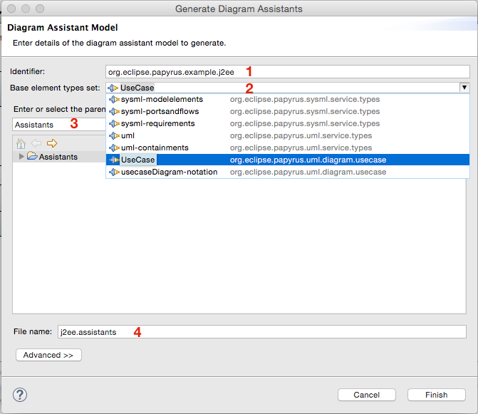

Papyrus UML diagrams provide a feature called Diagram Assistants that offer context-sensitive tools directly in the diagram. These are manifest in two forms:
The diagram assistants provided out-of-the-box by Papyrus support creation of the basic UML elements. However, you can extend the capabilities of the diagram assistants to create elements from your profile-based DSL, by creating new UML elements having your stereotypes applied.
Papyrus uses EMF-based models to describe the diagram assistants that can be presented in UML diagrams. The core UML assistants are described by these models, and so are the assistants for your DSLs.
Consider a trivial example of a profile for design of use cases in a J2EE-based system:
This profile has several stereotypes:
Diagram assistants that might be provided for such a profile should offer to create «branchPoint» ExtensionPoints in «webScenario» use cases:

and «web» Associations between «webScenario» UseCases and «user» or «browser» Actors, thus:

The model is described by a ModelingAssistantProvider in a *.assistants resource. The ModelingAssistantProvider captures essentially the same information as is provided by implementations of the org.eclipse.gmf.runtime.emf.ui.services.modelingassistant.IModelingAssistantProvider interface, with the exception of "show related elements" queries. In particular, it provides:
The filters specified by the different kinds of assistants may be owned by the assistants that require them (private one-offs) or may be shared for re-use by any number of assistants. The latter are commonly stored in the root ModelingAssistantProvider element, which just serves as a container. Several different kinds of filter are provided by Papyrus:
EObject or IAdaptable (such as a diagram EditPart) by ID. The match is a subtype match: any object that matches the given element type or any specialization of that element type is accepted by the filter. This is particularly useful with the visual-ID hinted types that distinguish different visualizations of UML elements in the different diagrams.Extenders can define custom filters by extending the filter model defined in the org.eclipse.papyrus.infra.filters plug-in. The editor makes use of EMF's "child creation extenders" facility to integrate your custom filters with the core set.

The image above shows a detail of the filter generated by Papyrus for a «branchPoint» ExtensionPoint pop-up tool in the example J2EE profile in Use Case diagrams. The filter is an and combination of
org.eclipse.papyrus.example.j2ee.WebScenario element type that specializes UseCase for the stereotype extensionBuilding a diagram assistant model by hand is a tedious undertaking. To ease this process, Papyrus provides a wizard that generates an assistants model from a Profile selected in the Model Explorer view:

Because the diagram assistants model specifies the element types that are created by the assistant tools, the wizard also generates the element types for your DSL as an *.elementtypesconfigurations model. If you only need to generate this latter model, that option is also available in the menu.
The diagram assistants wizard dialog requires four pieces of information as inputs (as identified in the image below):
*.assistants model file to create. The element types model will use the same name, except with the *.elementtypesconfigurations extension
Upon completion of the wizard, element types and modeling assistants are generated as follows:
profile:/plugin/... URI, then that is used to generate an equivalent IconEntry in the element type configuration*.elementtypesconfigurations model as the element types that it provides as assistants. This restricts the sources and targets of connections from/to new elements to only element types specific to your profile. You can edit this list as necessary to further restrict or widen the end types created by the connection assistantsAs mentioned above, the decision of which element types set model to base the generated assistants on is crucial in determining the shape of the result. There are essentially two choices to be made:
To generate modeling assistants that will be applicable to any diagram in which the elements of your DSL can be visualized, choose the uml element types set from the org.eclipse.papyrus.uml.service.types plug-in. This option has the advantage that if your profile has stereotypes extending metaclasses in several different diagrams, you will need only the one assistants model to cover all of those diagrams.
However, there are some drawbacks that you will have to account for. The most important of these is that, as generated, the assistants model has to infer on-the-fly specializations of your profile element types for the various visual ID hinted types supported by the different specific diagrams. This inference is automatic and can result in
These problems can usually be remedied by careful crafting of filters to restrict the applicability of each assistant. It may be necessary in some cases to resort to custom filters.
To generate modeling assistants that are applicable only to a particular diagram in which the elements of your DSL can be visualized, choose that diagram's element types set from the list (the example screen shot above shows the Use Case Diagram selected). This option has the advantage of giving the most accurate/appropriate assistants out of the box but it does require a separate model for each diagram that your DSL covers.
In this case, the element types generated for your assistants are specializations of the particular visual-ID hinted types supported by the diagram for the different visualizations, in that diagram context, of the base UML metaclass. The most significant customization that you would do after generating the assistants model is to delete assistants that are not required.
The most important considerations in designing assistant models are appropriateness of the element types suggested to the user and the number of element types suggested to the user.
As discussed above, the generation of the assistants model just provides a starting point that needs to be fine-tuned. The generator outputs every combination that seems to be valid; these need to be culled in practice. Some assistants are not valid in every context where they may be shown (which requires customization of their filters) whereas many assistants just may not be necessary because they are element types that are rarely used, or only in advanced use cases.
Of particular concern is the scaling of the diagram assistants user interface: it is important not to overwhelm users with too many options. There is a practical limit to how large the pop-up bar can be before its usability degrades; likewise the menus that are popped up for completion of connections. When designing the assistants model for your profile, keep in mind that the diagram assistants will include proposals from five sources:
The number of assistants presented on any given selection in a diagram can add up rather quickly. Precise filtering of assistants is critical and restricting the overall number of assistants that are defined to only the most commonly used elements is highly recommended.
There are two ways to deploy diagram assistants. The assistants in a *.assistants resource can be hot-deployed directly from the workspace or they may be statically deployed in a plug-in installed in the Papyrus workbench.
The simplest method, which is best for testing during development of the assistants model, is to deploy the assistants model in your workspace directly into the running Papyrus workbench. In the Project Explorer, select your assistants model and choose the Deploy Modeling Assistants action in the context menu:

Note that you may first need to deploy the element types configuration model if you have not already done so.
From this point, the assistants described in your model are active in the system. Whenever you save changes, the model is "hot re-deployed" to update the diagrams in real time. Papyrus remembers which assistant models in the workspace are deployed so that you don't have to deploy them again the next time you open that workspace.
To remove the assistants in a model from the Papyrus run-time, just select the Deactivate Modeling Assistants action in the context menu:

When your assistants model is ready to ship, together with your profile and other DSL tooling, you should deploy it statically in the plug-in that installs your profile into your users' Papyrus workbenches. Simply bundle the *.assistants resource in your plug-in and register it on the org.eclipse.papyrus.infra.gmfdiag.assistants.modelProviders extension point just as Papyrus, itself, does for the core UML diagram assistants: